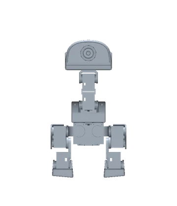
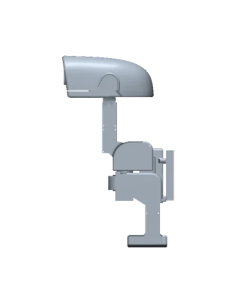
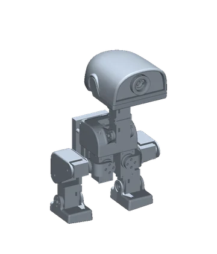

Entering calibration and unloading all servos…
Procedure
Opening this page stops motion and unloads every servo. Turn one joint by hand until it matches its picture, then press Set center & hold. Only that servo will hold position 2048; the others remain unloaded. Repeat for each joint. Use Unload all to release the centered joints for another adjustment. Exiting releases every servo.
Target pose: every joint at 0°, rendered from the training model. Tap a joint's picture for a close-up. Teal is the part that servo turns, the ring marks its shaft, and the dashed line leads to the next shaft.


